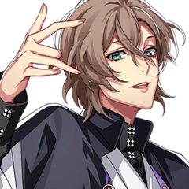
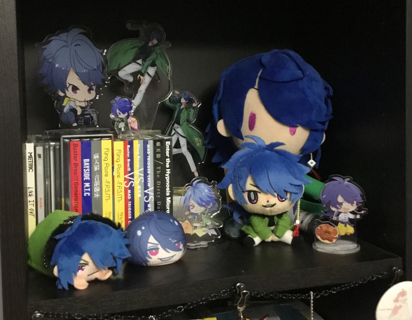

Reag's Hypmic fanpage

NOTE: This page is greatly outdated and I will no longer be updating it, but ig if anything it's a good look back to Hypmic at the time
Last update: 19 March 2020
Hypnosis Microphone -Division Rap Battle- (shortened as Hypnosis Mic/Hypmic) is a Japanese media franchise mostly focused on J-rap, but also now comprises of drama tracks, manga, and soon-to-be a mobile game.
This page is an eternal WIP as I work to improve its consistency, quality, and accuracy!
Sections:
NEW: Hypmic music is now on international Spotify!
The world of Hypnosis Microphone
Contents:
The setting
Hypmic takes place in a dystopian setting: some time into the future, women now run the government and weapons have been banned, bringing an end to war. However, a technology known as the "hypnosis microphone" has been developed, allowing words to be used as weapons. In place of using guns or other such things, violence now happens in the form of participants engaging in rap battles. Though the use of these microphones is technically illegal, these battles are still regarded as entertainment, with approved major tournaments being permitted in the governing district of Tokyo.
The characters
Hypmic focuses on 12 main characters split into 4 different groups, each representing a section of Tokyo known as their "division." The divisions are as following:
Ikebukuro Division - Buster Bros!!!
 |
|
Yamada Ichiro
MC.B.B
19 years old
Works odd jobs
CV. Subaru Kimura
|
|
Yamada Jiro
MC.M.B
17 years old
2nd year in high school
CV. Haruki Ishiya
|
|
Yamada Saburo
MC.L.B
14 years old
3rd year in middle school
CV. Kouhei Amasaki
|
Song list:
- Ikebukuro West Game Park
- Good Morning, Ikebukuro
- (VS MTC) WAR WAR WAR
Yokohama Division - MAD TRIGGER CREW
|
 |
Aohitsugi Samatoki
Mr Hardcore
25 years old
Yakuza
CV. Shintaro Asanuma
|
|
Iruma Jyuto
45 Rabbit
29 years old
Police officer
CV. Wataru Komada
|
 |
Rio Mason Busujima
Crazy M
28 years old
Ex-navy
CV. Shinichiro Kamio
|
Song list:
- Yokohama Walker
- Shinogi -Dead Pools-
- (VS BBros) WAR WAR WAR
- (VS Matenrou) Death Respect
Shibuya Division - Fling Posse
|
 |
Amemura Ramuda
easy R
24 years old
Fashion designer
CV. Yusuke Shirai
|
|  |
Yumeno Gentaro
Phantom
24 years old
Writer
CV. Soma Saito
|
|
Arisugawa Dice
Dead or Alive
20 years old
Gambler
CV. Yukihiro Nozuyama
|
Song list:
- Shibuya Marble Texture -PCCS-
- Stella
- (VS Matenrou) BATTLE BATTLE BATTLE
Shinjuku Division - Matenrou
|
 |
Jinguji Jakurai
ill-DOC
35 years old
Doctor
CV. Sho Hayami
|
 |
Izanami Hifumi
Gigolo
29 years old
Host
CV. Ryuichi Kijima
|
|
Kannonzaka Doppo
DOPPO
29 years old
Office worker
CV. Kento Ito
|
Song list:
- Shinjuku Style ~Don't Make Me Laugh~
- Papillon
- The Champion
- (VS FP) BATTLE BATTLE BATTLE
- (VS MTC) Death Respect
Osaka Division - Dotsuitare Honpo
|
|
Nurude Sasara
Tragic Comedy
26 years old
Comedian
CV. Iwasaki Ryouta
|
|
Tsutsujimori Rosho
WISDOM
26 years old
Teacher
CV. Kengo Kawanishi
|
 |
Amayado Rei
MC MasterMind
46 years old
Conman
CV. Takaya Kuroda
|
Song list:
Nagoya Division - Bad Ass Temple
 |
|
Harai Kuko
Evil Monk
19 years old
Monk
CV. Shouta Hayama
|
 |
Aimono Jyushi
14th Moon
18 years old
Visual kei musician
CV. Yuki Sakakihara
|
 |
Amaguni Hitoya
Heaven & Hell
35 years old
Lawyer
CV. Eiji Takeuchi
|
Song list:
- Bad Ass Temple Funky Sounds
The Dirty Dawg (TDD)
 |
|
Yamada Ichiro
17 years old
|
|
Aohitsugi Samatoki
23? years old
|
|
Amemura Ramuda
22? years old
|
|
Jinguji Jakurai
33? years old
|
2 years prior to the current time, The Dirty Dawg was a team composing of the division leaders before it fell apart.
Song list:
Other
 |
Aohitsugi Nemu
19 years old
Samatoki's sister,
Vice Chief of the Office of Internal Affairs
CV. -n/a-
|
|
Kadenokoji Ichijiku
31 years old
Assistant Prime Minister,
Administrative Director General of the Police
CV. Takahashi Chiaki
|
 |
Tohoten Otome
49 years old
Prime Minister
CV. Yuu Kobayashi
|
The music
Hypmic originally debuted with a song known as Hypnosis Mic -Division Rap Battle- in late 2017, which introduced the setting, divisions, and characters.
So far Hypmic has released 9 CDs. The first 4 were for each division: each CD contained 3 solo songs (one per member) and 2 drama tracks.
After all the division CDs were released, the next announcement came out: there was going to be a "battle season" in which the divisions faced off against eachother, and the victor would be determined by online voting. A new Division All Stars song was released to mark the occasion: Hypnosis Mic -Division Battle Anthem-
They started with 2 matchups: BBros vs MTC, then FP vs Matenrou, after which voting determined who would continue.
Each CD contained 1 "battle" song, 2 division songs, and 2 drama tracks for each division.
The first round of battles culminated with MTC and Matenrou victorious. Obviously, they then faced off.
This CD contained 1 battle song (Death Respect, probably my fav Hypmic song) and 4 remixes of the previously-released division songs.
|
|
Release: 14 November 2018
- [MAD TRIGGER CREW VS Matenrou] DEATH RESPECT
- [Buster Bros!!!] IKEBUKURO WEST GAME PARK (Boyz Sunshine remix)
- [MAD TRIGGER CREW] Yokohama Walker (Triple Trippin' remix)
- [Fling Posse] Shibuya Marble Texture -PCCS- (Candy Dazed remix)
- [Matenrou] Shinjuku Style ~Warawasu na~ (Nerve Rackin' remix)
|
Matenrou ended up winning the battle season (unsurprising as they're the most popular group... -_-;). However, the vote was apparently about 50-50.
Matenrou finished with a new single, which contained 1 new Matenrou song (The Champion), 1 song from The Dirty Dawg (TDD Legend), and 2 drama tracks.
|
|
Release: 27 February 2019
- [Matenrou] The Champion
- [The Dirty Dawg] T.D.D LEGEND
- Drama Track: Me Against the World
- Drama Track: Testimony
|
Afterwards in April 2019, a full album was released. This contained 3 Division All Stars songs (including a new one titled Hoodstar), 4 new division songs along with the 4 battle seasons ones, and TDD Legend. There was a special edition that also included 5 drama tracks, in addition to another SE that also contained blurays for the 2nd and 3rd lives.
|
|
Release: 24 April 2019
- [All Stars] Hoodstar
- [All Stars] Division Rap Battle
- [Buster Bros!!!] Good Morning, Ikebukuro
- [Buster Bros!!!] IKEBUKURO WEST GAME PARK
- [MAD TRIGGER CREW] Shinogi (Dead Pools)
- [MAD TRIGGER CREW] Yokohama Walker
- [Fling Posse] Stella
- [Fling Posse] Shibuya Marble Texture -PCCS-
- [Matenrou] Papillon
- [Matenrou] Shinjuku Style ~Don't Make Us Laugh~
- [The Dirty Dawg] T.D.D LEGEND
- [All Stars] Division Battle Anthem
|
After a hiatus, on 4 September 2019 the theme song for the mobile game Hypnosis Mic -Alternative Rap Battle- was released.
2 new divisions were announced soon after -- Osaka Division's Dotsuitare Honpo, and Nagoya Division's Bad Ass Temple. To coincide with the introduction of new divisions, the first Hypmic song was re-released as Hypnosis Mic -Division Rap Battle- + on 26 September 2019 and included parts from both Dotsuitare Honpo and Bad Ass Temple.
Debut albums for the new divisions were soon to follow, and each contained 1 group song, 3 solo songs, and 1 drama track.
After the release of Bad Ass Temple Funky Sounds, it was announced that the 4 original divisions would be receiving new CDs under the "-Before The 2nd D.R.B-" title.
drama tracks
NEW: All full drama tracks are available for listening on Spotify!
Currently, the majority of Hypmic's world has been explored through drama tracks which are released on most CDs. In addition, they are usually released on Youtube as well.
List:
manga
Hypmic has 3 different manga series that expand on the drama tracks and lore, each focusing on different groups within the series:
- Hypnosis Mic -Division Rap Battle- side B.B & M.T.C
- Hypnosis Mic -Division Rap Battle- side F.P & M
- Hypnosis Mic -Before the Battle- The Dirty Dawg
I actually haven't been able to read these yet, so unforunately I can't comment too much on them.
There are currently no official translations available, but some fan translations are in progress:
Other announcements
Hypmic has grown greatly since its debut in 2017, expanding past CDs and reaching into other media like games, and stage plays. Unfortunately, I'm not too familiar with any of these, and some of these (such as stage productions) remain very distant for foreign fans like myself.
Mobile game
A mobile game titled Hypnosis Mic -Alternative Rap Battle- was announced sometime in 2019, but there isn't too much known about it other than that it will have rhythm game elements, introduce new characters, have new songs, and take place in an alternate universe. The game was originally scheduled for December 2019, but has been pushed back to 2020.
Stage productions
A stage play titled Hypnosis Mic -Division Rap Battle- Rule the Stage is under works. It consists of multiple parts (known as tracks) and features new music and characters. Most notably is the addition of Akabane Division "North Bastard" consisting of Kazusato Doan (an office worker), Kenei Saragi (an ex-military researcher), and Ryozan Kokuri (a swindler).
The known releases/showings are as follows:
- Track 1: Nov. 15 - Dec. 1, 2019
- Track 2: Spring 2020
my experience with hypmic
dice....................... *fondly touches the screen*
first contact
I was first introduced to Hypmic in late 2017 when it was first announced -- I had a few mutuals on Twitter who were interested in the premise and followed it closely, but I actually wasn't too interested myself as it centered around a ridiculous setting (sad dystopian society where men are oppressed lol), focused on male characters, and was styled around rap.
I didn't actually start getting into Hypmic until about early December, before the release of the Matenrou CD. Corrupt cop Iruma Jyuto was the first character who really caught my eye, being a glasses-wearing dipshit in a suit. I was intrigued, so I finally caved and gave the music a listen -- honestly, I wasn't blown away. I'm not a fan of rap to begin with, so I honestly didn't care for most of the songs I listened to. I enjoyed Sensenfukoku and the Division Rap Battle song, but that was about it. I was still interested though, so I made sure to give a listen when the Matenrou previews dropped.
When the Matenrou previews came out, I instantly fell in love with Hifumi and his solo song Champagne Gold. I became more interested in Hypmic thanks to Matenrou and I obsessed over Hifumi for about a month, and then... the Fling Posse CD came out. After this, I discovered Dice was my true love and man was it a downward descent from there. I did eventually come to enjoy the majority of Hypmic music after it grew on me, and I think I do have more appreciation for rap/hip-hop in general now.
Anyway, Hypmic had actually had no merch until late January/February 2018 iirc, but once they started producing it it had a lot. I became super focused on collecting Dice merch for months and months, and I spent an absolutely ungodly amount of money on merch and proxy services. Eventually (after about a year) I lost interest in merch, but in that time period I probably managed to get the majority of merch that was released. It's kinda rough to look back on, but it's also fun to see that I have quite an impressive Dice shrine lol



... yeah